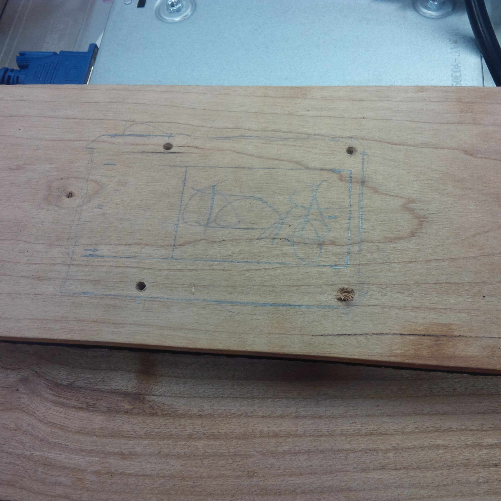
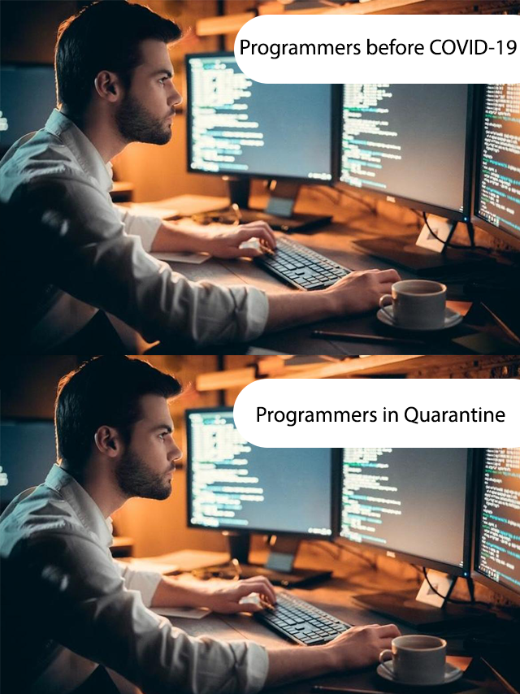

What does it take to make a WAKE? (Part 8)
February 27, 2021 Fabrication Team

What does it take to make a WAKE? (Part 7)
February 21, 2021 Fabrication Team

What does it take to make a WAKE? (Part 6)
February 19, 2021 Fabrication Team

What does it take to make a WAKE? (Part 5)
February 17, 2021 Fabrication Team

Communication Between Project Components (Part 2)
February 17, 2021 Software Team
What does it take to make a WAKE? (Part 4)
February 14, 2021 Fabrication Team

What does it take to make a WAKE? (Part 3)
February 10, 2021 Fabrication Team

What does it take to make a WAKE? (Part 2)
February 3, 2021 Fabrication Team

What does it take to make a WAKE? (Part 1)
January 27, 2021 - Fabrication Team
Communication Between Project Components (Part 1)
January 26, 2021 Software Team
FYDP in a Pandemic: Fabrication Location, Equipment, and Safety
January 20, 2021 - Fabrication Team
FYDP in a Pandemic: Sourcing Fabrication Material
January 13, 2021 - Fabrication Team

FYDP in a Pandemic: Software Team Gets Started
January 10, 2021 - Software Team
